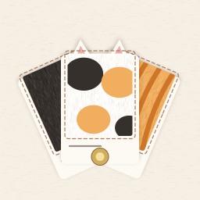

子ねこの毛色見本
両親の毛色から、子ねこの毛色のしくみを知る
父ねこと母ねこの毛色・模様をえらぶと、生まれる子ねこの毛色が、オス・メスに分けて割合つきで、毛色の見本帳のように並ぶ iPhone と iPad のアプリです。
- 地の色（黒・チョコ・シナモン）、うすい色、茶、さび・三毛、しま、しまの形、銀、全身の白、白の入り方、ポイント、長い毛をえらべます
- 子ねこの毛色が「オスの 3/16」のように並びます。見本をたたくと、その毛色になるわけ（父と母からもらう遺伝子の組）が出ます
- 見た目には出ない「かくし持っている遺伝子」を入れると、出る毛色が変わります。かくし持っていれば出る毛色も並びます
- 生まれた子ねこの毛色を足すと、親がかくし持っている遺伝子が分かることがあります
- 遺伝子のカードで、どちらの親から何をもらうかを 2×2 のますで見られます
- うちのねこを名前をつけて保存し、親にえらべます
- 登録はいりません。入れたものは端末の中だけに保存します。課金はありません
よく知られた10の遺伝子で計算します。ほかの遺伝子や、まれな例外（オスの三毛など）は入れていません。毛色のしくみを知るためのアプリで、繁殖をすすめるものではありません。